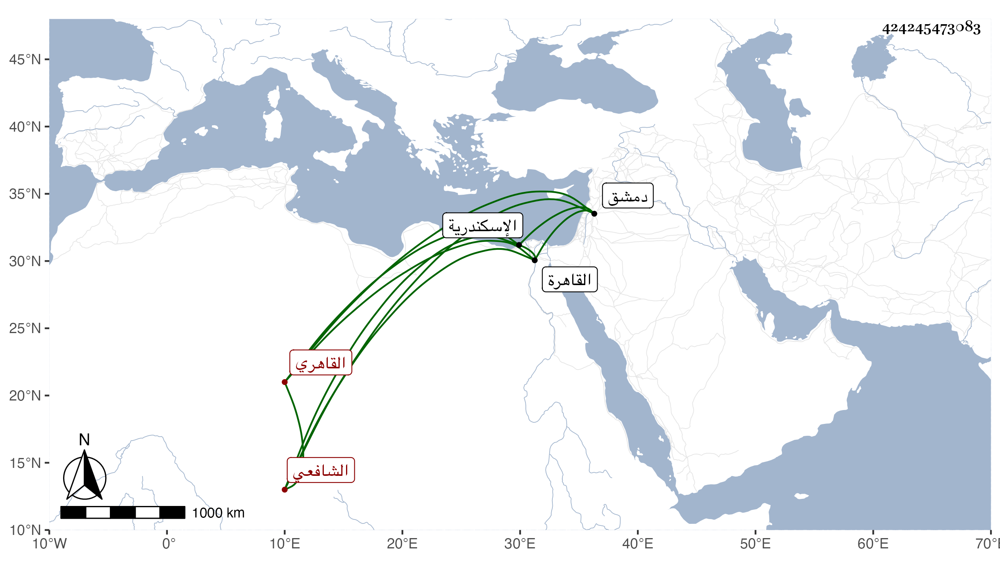

0902Sakhawi.DawLamic.ITO20230111-ara1.EIS1600.424245473083
Biography ID: 424245473083
479
أحمد بن محمد بن محمد بن إبراهيم بن عبد الرحيم الشهاب بن الشمس الحروري بفتح المهملة ثم راء مشددة مضمومة وآخره مهملة نسبة إلى قرية تسمى حرور من دمشق القاهري الشافعي . ولد في ربيع الثاني سنة اثنتين وثمانين وسبعمائة بالقاهرة ونشأ بها فحفظ القرآن وتلاه لأبي عمرو على الشرف يعقوب الجوشني والنور أخي بهرام واشتغل بالفقه على أبيه وجده وقال إنه كان فاضلا وسمع على التنوخي والأبناسي والغماري وابن الشيخة والعراقي والمطرز والجوهري وآخرين وأجاز له أبو هريرة بن الذهبي وابن العلاء وجماعة وأجاز لي وكان قد حج في سنة خمس وعشرين ودخل الاسكندرية وباشر عند الزمام ، وكان نافذ الكلام أيام فارس الخزندار . مات بعد الخمسين تقريبا رحمه الله وعفا عنه وإيانا .
